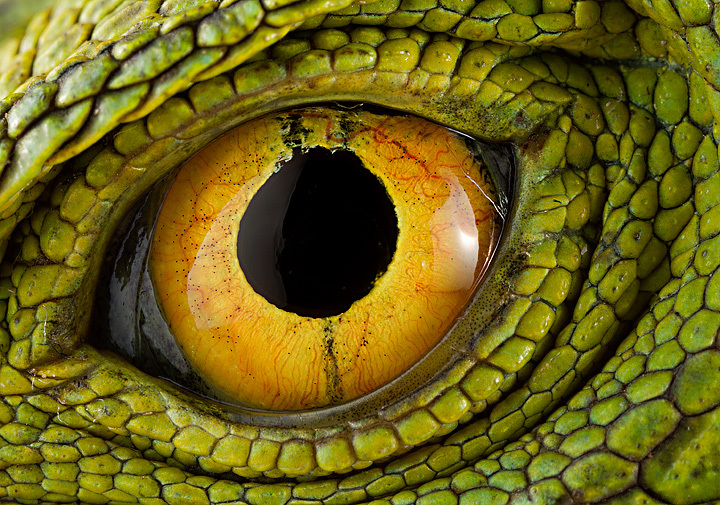
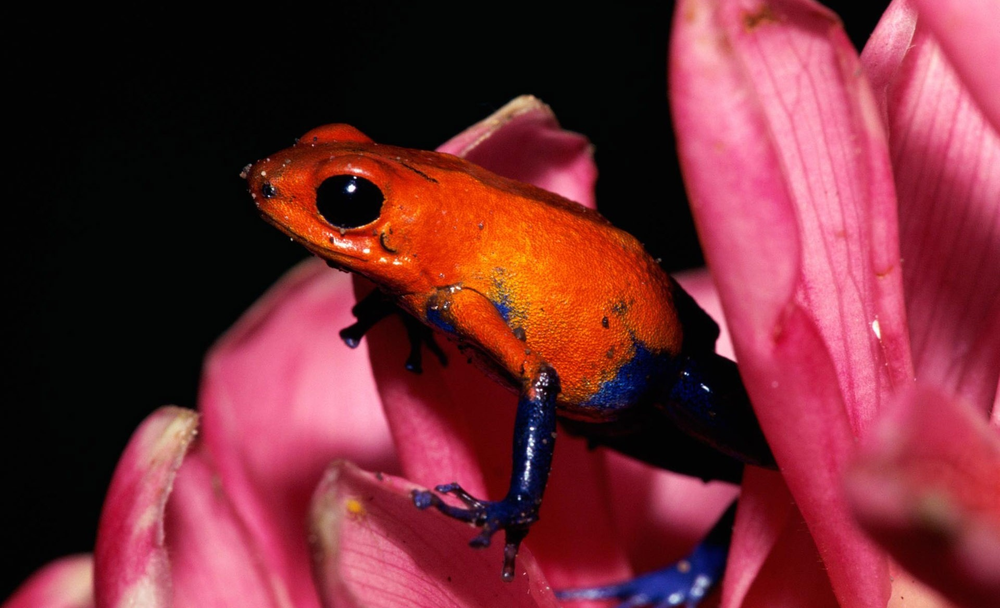

Любовь к животным объединила нескольких энтузиастов и вдохновила их на создание уникального проекта под названием Тритон. С самого начала главными приоритетами компании являются: продвижение надлежащего содержания экзотических животных, предоставление качественных товаров и услуг, разведение животных в собственном питомнике и сохранение видов.
На нашем сайте и в розничных магазинах представлен обширный ассортимент животных, террариумов, оборудования, декора и кормов. Мы предоставляем полный спектр услуг, включая оформление террариумов, обслуживание, онлайн консультирование, отель для животных и многое другое. В нашем магазине вы всегда сможете собрать полный комплект для содержания питомца, а если вы новичок, наши сотрудники с радостью помогут выбрать первое животное и обустроить идеальный террариум.
Наш основной магазин занимает 1000 кв.м. и находится в шаговой доступности от станции метро Семеновская. Сотрудники зоомагазина ежедневно проводят информативные экскурсии и предлагают посетителям познакомиться с экзотическими животными не только через стекло террариумов, но и прикоснуться к ним вживую. Каждый желающий имеет уникальную возможность приобрести необычное животное и все необходимое для его содержания. Кроме того, мы предоставляем гарантию на животных, приобретенных у нас, клубную карту с множеством привилегий, отель для животных и другие услуги.